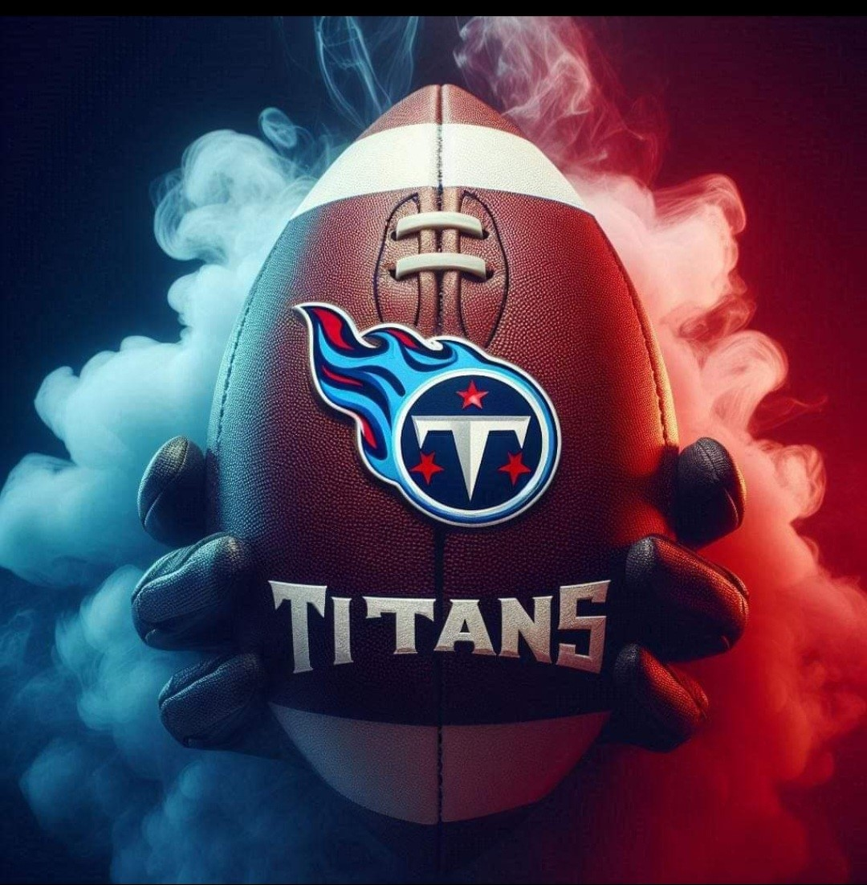

Founded: 1960 (as Houston Oilers, rebranded as Tennessee Titans in 1999)
Stadium: Nissan Stadium, Nashville, Tennessee
Conference: AFC South
2024 Head Coach: Brian Callahan (New)
Offensive Coordinator: Nick Holz (New)
Defensive Coordinator: Dennard Wilson (New)
The Tennessee Titans are entering the 2024 season with fresh leadership, featuring a new head coach and coordinators, and a roster built around young talent and experienced veterans. With key players on both offense and defense, the Titans aim to make a push for the playoffs.
Key Players to Watch:
Key Games for the 2024 Season:
Week 1: vs. New Orleans Saints – Home opener.
Week 8: vs. Kansas City Chiefs – A critical mid-season matchup against one of the top AFC teams.
Week 17: vs. Philadelphia Eagles – End-of-season game that could have playoff implications.
The Titans' 2024 season features key matchups, starting with a home opener against the New Orleans Saints in Week 1. A crucial mid-season clash against the Kansas City Chiefs in Week 8 will test the team's progress, while a Week 17 showdown with the Philadelphia Eagles could have significant playoff implications.

A New Era for the Tennessee Titans
As the Tennessee Titans embark on their 2024 season, they find themselves at a pivotal moment, balancing a mix of youthful talent and seasoned veterans under new leadership. With Brian Callahan at the helm as head coach, alongside offensive coordinator Nick Holz and defensive coordinator Dennard Wilson, the Titans are poised for a fresh chapter. The blend of promising players like Will Levis and Tony Pollard, combined with established stars such as DeAndre Hopkins and Jeffery Simmons, gives the team both explosive potential and solid foundations on both sides of the ball.
With crucial games against top-tier opponents like the Kansas City Chiefs and the Philadelphia Eagles, the Titans' road to the playoffs will be filled with challenges that will test their resilience and cohesion. The team's success will hinge on its ability to rise to these occasions and build momentum throughout the season. Fans can expect a thrilling ride as the Titans look to solidify their place as contenders in the AFC South and beyond.